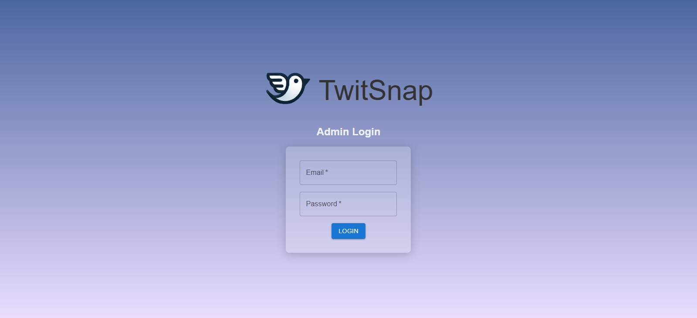
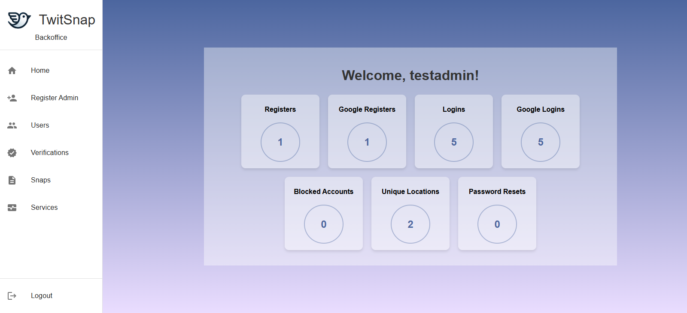
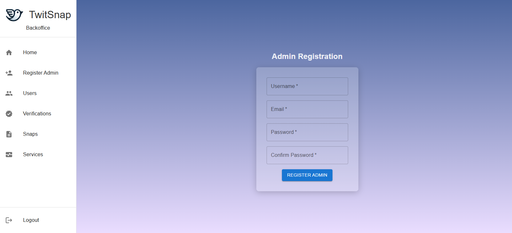
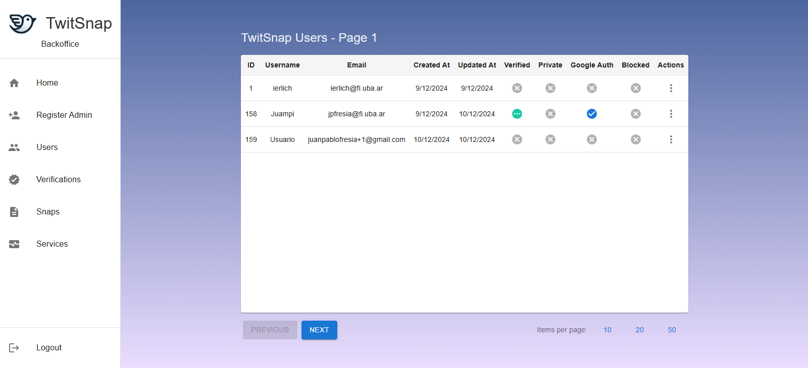
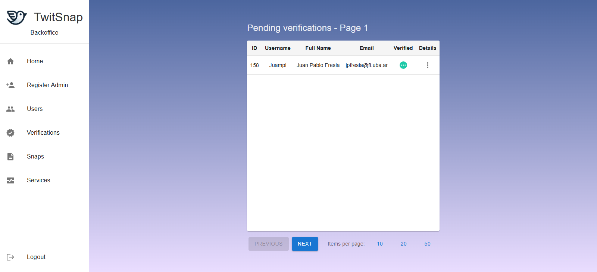
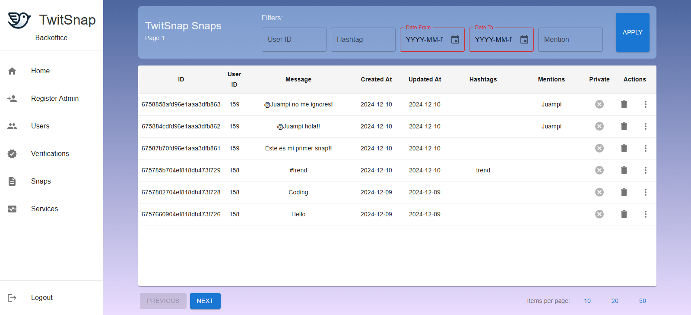
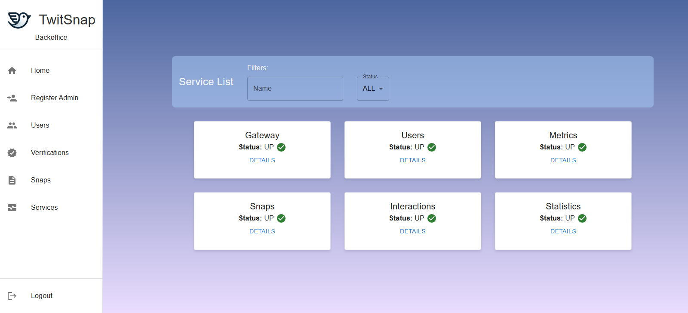

La pantalla de bienvenida le solicitara su usuario y contraseña de administrador para poder ingresar al backoffice.
Una vez que haya ingresado al backoffice, se encontrará en la pantalla de inicio. Aquí podrá ver métricas de la aplicación, como la cantidad de usuarios registrados e inicio de sesión (tanto normales como con Google), la cantidad de usuarios bloqueados, la cantidad de localizaciones registradas y la cantidad de recupero de contraseñas realizados. Además, vera en el costado izquierdo una barra lateral para poder navegar por la plataforma y cerrar sesión.
Para registrar un nuevo administrador, haga click en el botón "Registrar Administrador" en la barra de navegación. Complete los campos solicitados y haga click en "Registrar".
En la sección de usuarios podrá ver una lista paginada de todos los usuarios registrados en la aplicación. Podrá ver su ID, nombre de usuario, email, fecha de creación, fecha de última modificación, si se encuentra verificado, si posee perfil privado, si se creó con Google y si se encuentra bloqueado. Además, podrá presionar sobre los tres puntos verticales para tener una vista más detallada y poder bloquear o desbloquear al usuario.
En la sección de verificaciones podrá ver una lista paginada de todas las peticiones de verificación de usuarios. Podrá ver el ID del usuario, su nombre de usuario, nombre completo otorgado y estado de la verificación. Además, podrá presionar sobre los tres puntos verticales para tener una vista más detallada con la imagen de verificacion proporcionada por el usuario y poder aceptar o rechazar la verificación.
En la sección de snaps podrá ver una lista paginada de todos los snaps creados en la aplicación. Cada fila tendrá el ID del snap, ID del autor, mensaje del snap, fecha de creación, fecha de última modificación, hashtags, menciones y si es un snap privado o no. Podrá eliminar el snap presionando sobre el ícono de basura, o ver más información (como likes y SnapShares totales) presionando sobre los tres puntos verticales. Además, la lista cuenta con la opción de filtrar por ID de usuario, hashtag, menciones y un rango de fechas.
En la sección de servicios podrá ver cada uno de los servicios que componen el backend de la aplicación. Se le mostrará el nombre del servicio y su estado, pudiendo presionar sobre el botón "Detalles" para obtener más información sobre el mismo. Además, se le da la opción de filtrar por nombre del servicio y estado.
